Fiche d’État Civil & Titres
Origines Familiales, Voyage aux États-Unis & Rectification Patronymique
Jean-Baptiste Jules Duchastel naît le 19 juillet 1823 à Reims, au 9 rue de Vesle, au sein d'une maison de commerce occupée par son père, Alexandre Louis François Duchastel de Montrouge (1784–1863), alors négociant rémois. En 1825, la famille assiste à Reims au sacre de Sa Majesté le roi Charles X, au cours duquel son père figure parmi les membres de la grande députation départementale.
À la mort de son grand-oncle le baron Jacques-Jean-Baptiste Duchastel-Berthelin en 1830, son père Alexandre se charge de la lourde gestion de l'héritage foncier et accomplit de fréquents voyages entre Reims, Troyes, Paris et le domaine familial de Monthoury, acquis vers 1835.
Au milieu des années 1840, le jeune Jules entreprend un voyage outre-Atlantique et séjourne à New York, vraisemblablement au Bowling Green Hotel, un établissement très prisé des voyageurs français. C'est à New York qu'il rencontre la toute jeune Julia Sylvia Félicie Pelerin (née en 1830). Le 19 mai 1845, Jules (âgé de 21 ans) et Julia (âgée de 14 ans) se marient à New York, très probablement en l'église épiscopale française du Saint-Esprit (située à l'angle des rues Church et Franklin), sous la bénédiction du recteur Antoine Verren.
En marge de l'acte de naissance de son fils Lucien-Ernest Duchastel au registre d'état civil de Montron, une mention marginale essentielle atteste de la régularisation légale du nom patronymique de la branche :
« Par jugement rendu par le tribunal civil de 1re instance de la Seine le vingt-deux avril mil huit cent quatre-vingt, l’acte ci-contre a été ratifié en ce sens que Jean Baptiste Jules, et ses cinq enfants, sont autorisés à ajouter à leur nom patronymique celui de De Montrouge. Mention faite le 9 janvier 1881 à Château-Thierry par le greffier. »
Vie Publique, Mandats Municipaux & Engagement Politique
Fixé au château de Monthoury sur la commune de Montron (Aisne), Jules Duchastel s'investit très tôt dans la vie administrative et politique du département de l'Aisne.
Dès la Révolution de 1848, le 16 mars 1848, il adresse depuis Monthoury une importante circulaire électorale intitulée « À mes Concitoyens du département de l'Aisne » pour présenter sa candidature d'inspiration libérale et propriétaire.
En juillet 1855, il est nommé maire et officier de l'état civil de la commune de Montron, charge municipale qu'il exercera de manière ininterrompue durant plus de 15 ans, jusqu'en décembre 1870 :
- 1838 – 1843 : Benoît Gaillard, maire.
- 1843 – 1855 : Jules Léon Masson, maire.
- Juillet 1855 – Décembre 1870 : Jean-Baptiste Jules Duchastel, maire.
- 1871 – 1872 : Jules Léon Masson, maire.
- 1873 – 1875+ : Alphonse Dauvergne, maire.
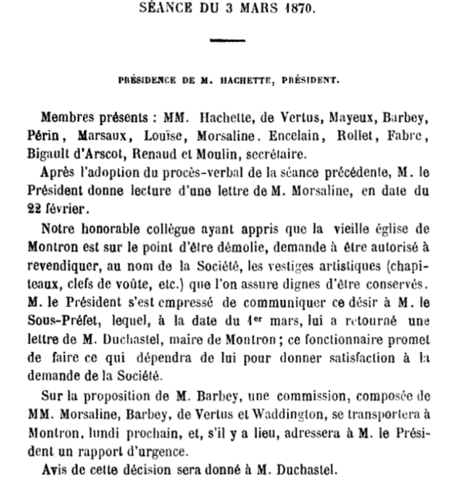
Parallèlement à ses fonctions municipales, Jules Duchastel siège au Conseil Général du département de l'Aisne comme représentant du canton de Neuilly-Saint-Front (délibérations publiques enregistrées de 1861 à 1873). Il est également appelé à siéger aux Assises de l'Aisne à Laon à titre de grands jurés en 1873 et en 1881.
Patrimoine Foncier & Résidences (Monthoury & Paris)
Au cours de son existence, Jean-Baptiste Jules Duchastel de Montrouge a partagé son séjour entre le domaine seigneurial familial de l'Aisne et plusieurs prestigieuses adresses parisiennes.
1. Le Château de Monthoury (Montron / Macogny, Aisne)
Le domaine de Monthoury appartenait au XVIIIe siècle à Victor-André LeGoix, dont la fille Marie-Louise-Joséphine LeGoix de Montoury fut baptisée en 1789. Victor-André LeGoix de Montoury était le beau-père d'Alexandre Louis François Duchastel. Ce dernier devint propriétaire de Monthoury vers 1835 (des courriers y sont adressés dès septembre 1835 par Neuilly-Saint-Front). Jules Duchastel y résida principalement de 1835 à 1875.
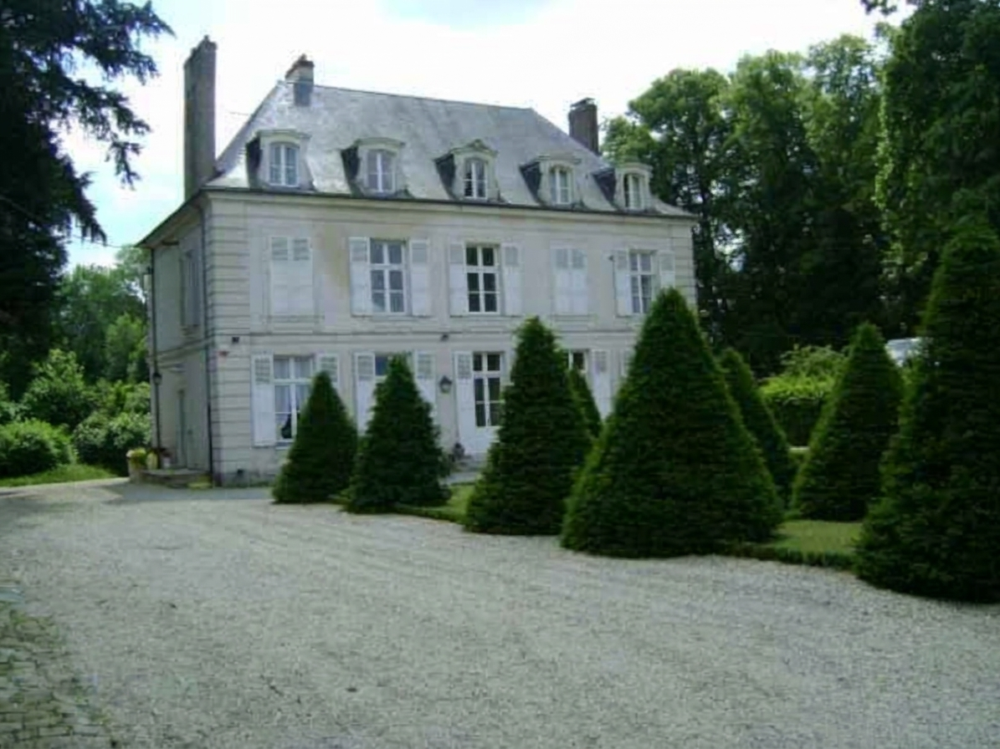
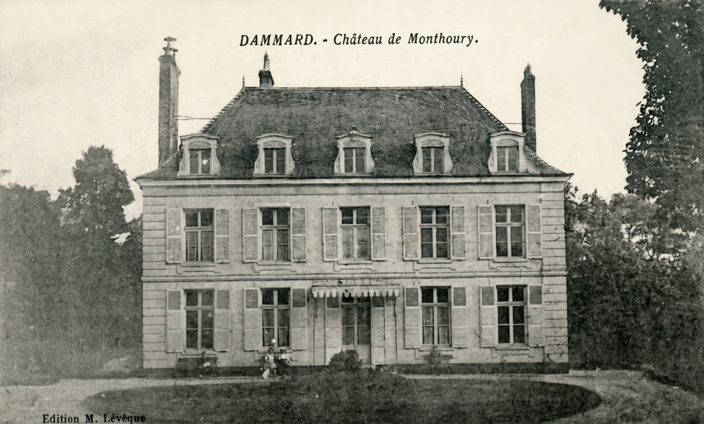
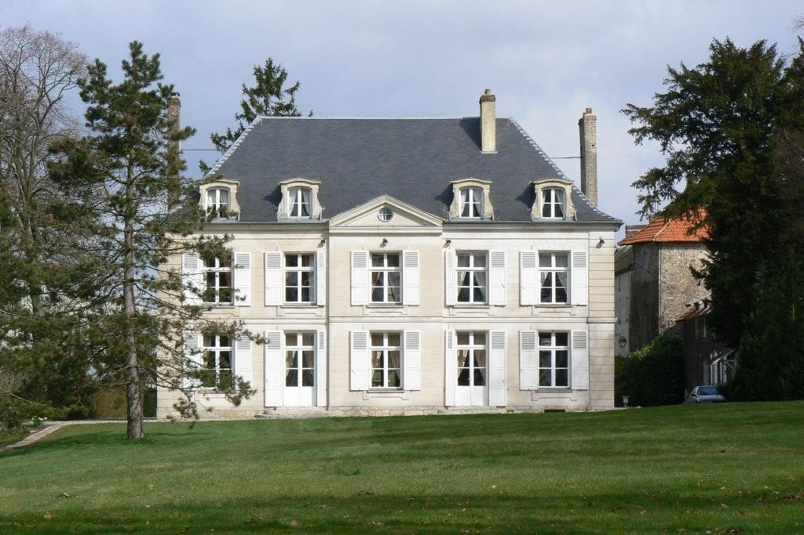
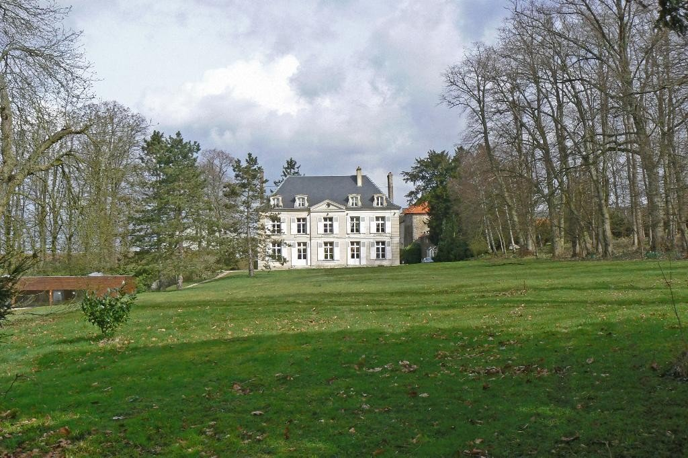
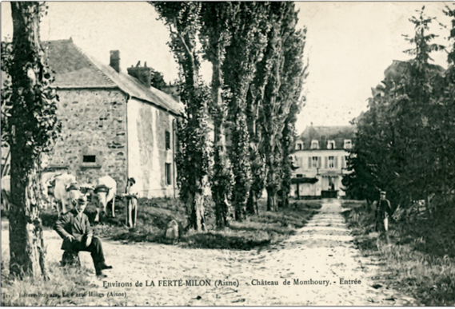
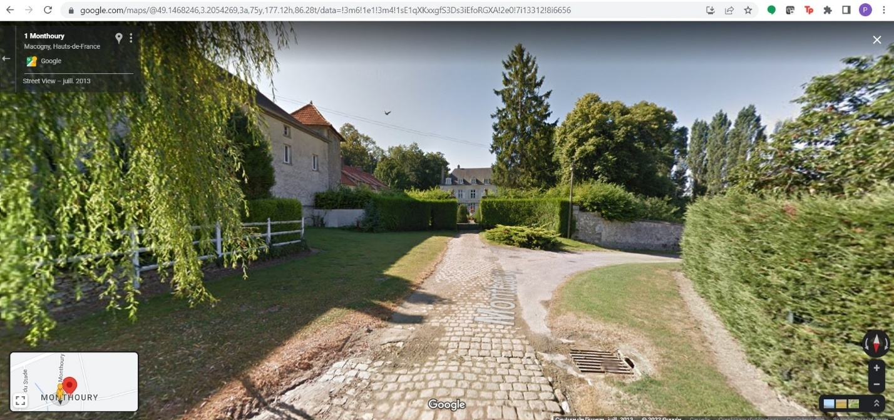
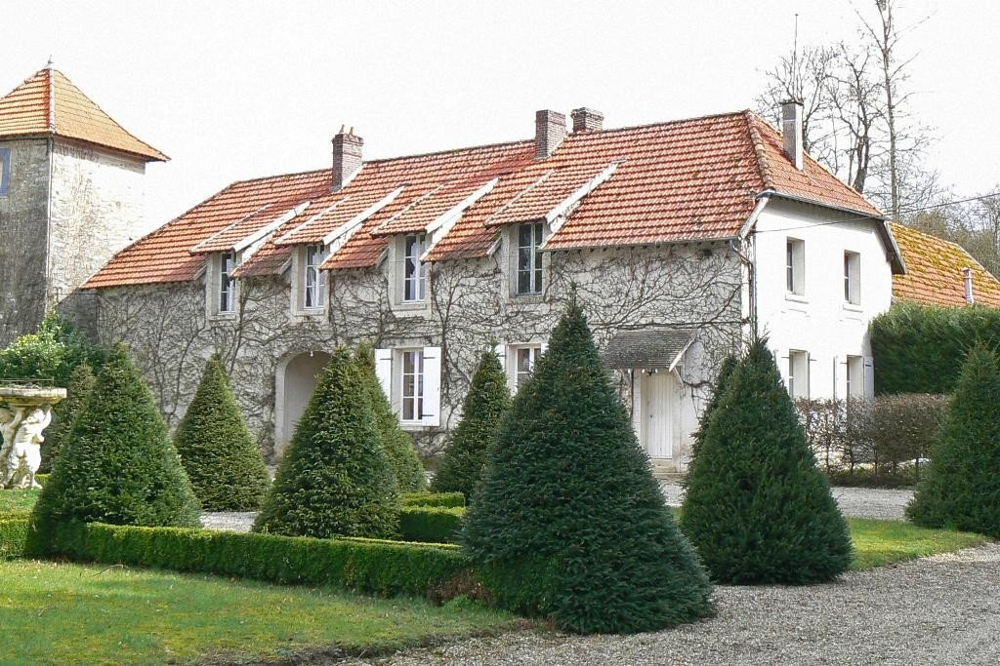

2. L'Hôtel Particulier du 107, rue du Faubourg Saint-Honoré (Paris 8e)
Après la fin de ses mandats de maire à Montron vers 1875, Jules Duchastel acquiert un élégant hôtel particulier de style Louis XVI situé au 107, rue du Faubourg Saint-Honoré à Paris, où il réside avec sa famille de 1875 à 1882 (plusieurs actes notariés d'obligations conservés aux Archives Nationales attestent de sa résidence à cette adresse). Le jardin de l'hôtel jouxtait l'avenue d'Antin. Cet hôtel abritera ultérieurement la célèbre maison de couture de Paul Poiret avant son remplacement par un immeuble moderne.


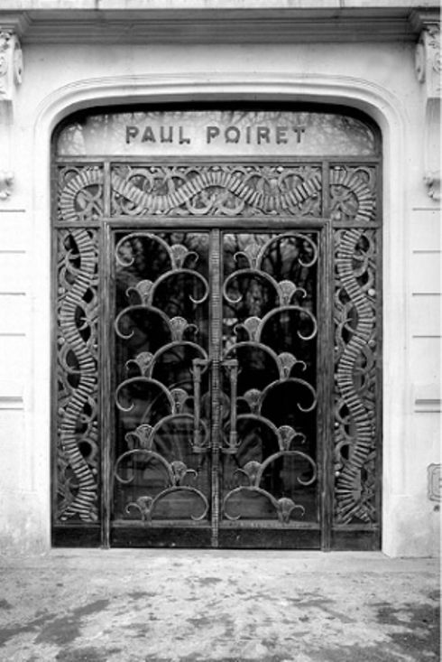
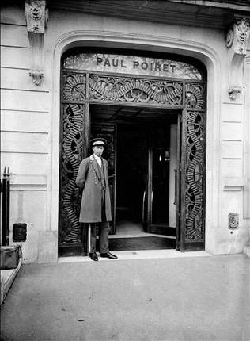
3. L'Hôtel Particulier du 41, rue de Prony (Paris 17e)
À la fin de sa vie, Jules Duchastel s'installe au 41, rue de Prony dans le 17e arrondissement de Paris, vaste hôtel particulier à l'angle de la rue Geoffroy-d'Saint-Hilaire où il s'éteint le 4 janvier 1889. Son fils Fernand Duchastel de Montrouge y résidera à sa suite jusqu'à la fin du siècle.
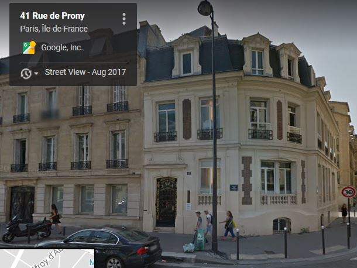
Unions & Descendance de Jean-Baptiste Jules
Première Union Julia Sylvia Félicie PELERIN (1830–1859) ›
Mariés le 19 mai 1845 à New York (États-Unis). De cette alliance sont nés trois enfants :
Carrière diplomatique : Chancelier du Consulat Général de France à Québec (Canada).
Seconde Union Berthe Eugénie FOLLIAS (1841–1921) ›
Bans publiés le 18 mars 1861 à Paris. De cette deuxième union sont nés deux enfants :
Arbre d'Ascendance Patronymique (5 Générations)
Sources Documentaires & Références Légales
- Acte de Naissance : Registres de l'état civil de Reims (Marne), 19 juillet 1823 (Ark Archives Marne ark:/86869/d0vp38hb7t25/cbe91aa5-d824-47f9-b022-f56a477724e2).
- Précis Historique du Sacre de Charles X (1825) : Mention de la demeure familiale au 9, rue de Vesle à Reims.
- Jugement Patronymique : Registre d'état civil de Montron (Aisne), mention marginale au 9 janvier 1881 autorisant l'adjonction légale du nom de Montrouge en vertu du jugement du Tribunal de la Seine du 22 avril 1880.
- Mandats Municipaux & Départementaux : Registres des maires de Montron (1855–1870), Délibérations du Conseil Général de l'Aisne (1868, 1871, 1873) et Séances de la Société historique de Château-Thierry (1870, 1872).
- Circulaire Électorale (1848) : Perrin, Recherches bibliographiques relatives au département de l'Aisne, p. 41.
- Nécrologie & Obsèques : Journal Le Gaulois, n° 2324 du 8 janvier 1889 (annonce des obsèques en l'église Saint-François de Sales à Paris).
- Acte de Décès : Archives de la Ville de Paris, Registres du 17e arrondissement, 4 janvier 1889 (41, rue de Prony).
- Archives Notariées : Archives Nationales (FranceArchives), obligations foncières de 1875, 1877 et 1882 au 107, rue du Faubourg Saint-Honoré.